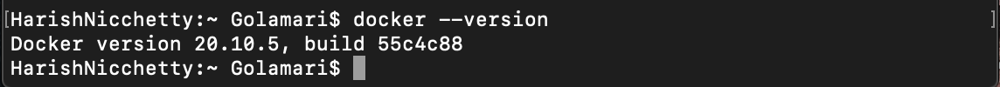
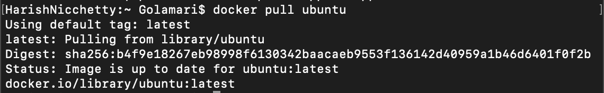
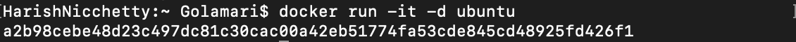
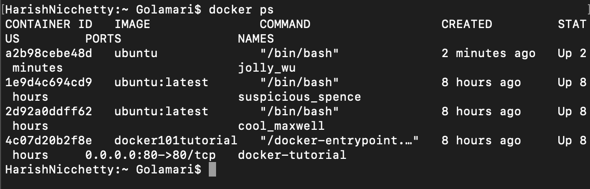
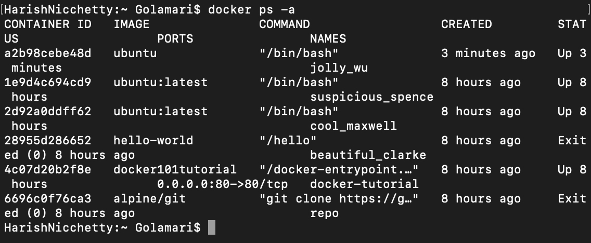
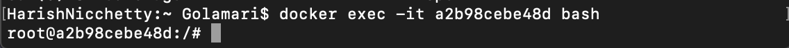
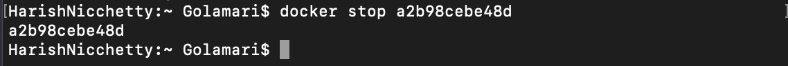
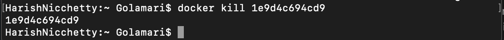
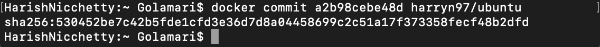
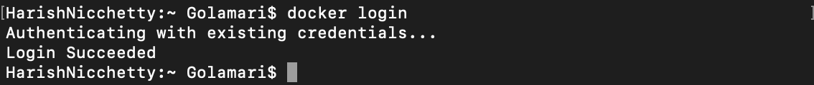

1)docker –version
This command is used to get the currently installed version of docker
2)docker –pull
docker pull < image name >
This command is used to pull images from the docker repository(hub.docker.com)
3)docker –run
docker run -it -d
This command is used to create a container from an image
4)docker ps
This command is used to list the running containers
5)docker ps-a
This command is used to show all the running and exited containers
6)docker exec
docker exec -it < container id > bash
This command is used to access the running container
7)docker stop
docker stop < container id >
This command stops a running container
8)docker kill
docker kill < container id >
This command kills the container by stopping its execution immediately. The difference between ‘docker kill’ and ‘docker stop’ is that ‘docker stop’ gives the container time to shutdown gracefully, in situations when it is taking too much time for getting the container to stop, one can opt to kill it
9)docker commit
docker commit < conatainer id > < username/imagename >
This command creates a new image of an edited container on the local system
10)docker login
This command is used to login to the docker hub repository
